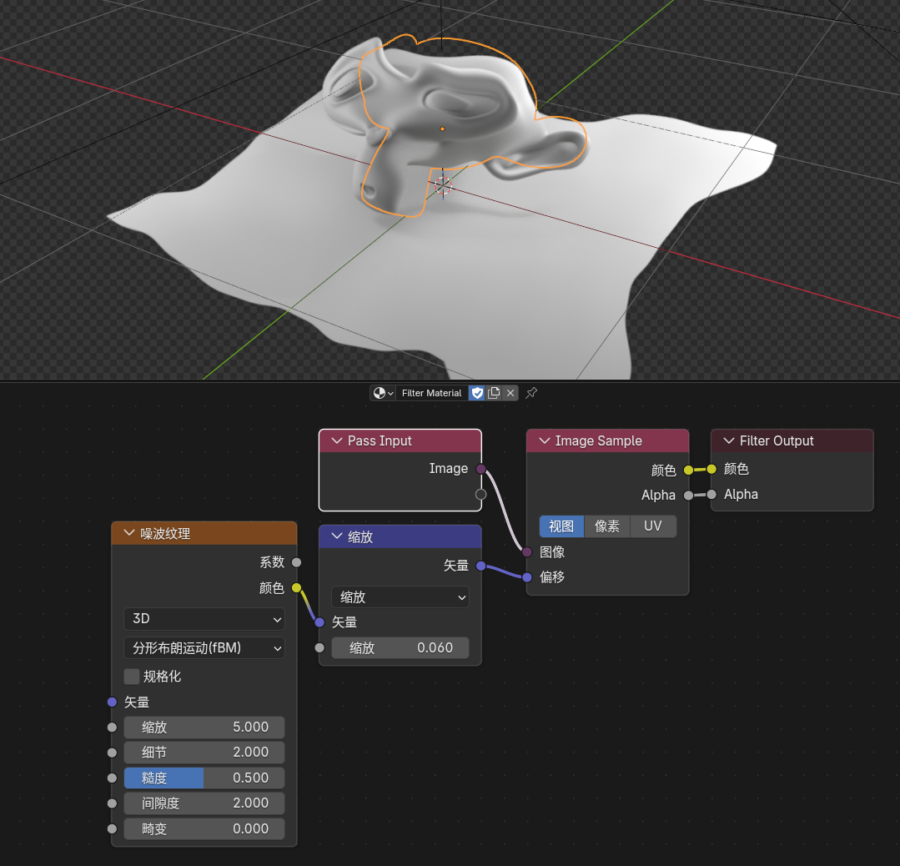
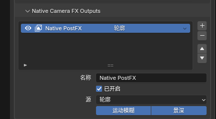
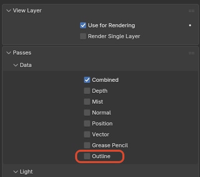

Scene-Level Eevee Extensions¶
1. Render Textures¶
Feature Description¶
Render Textures is an additional scene-level Eevee render-texture system.
It lets a scene maintain up to 4 render texture slots. Each slot can point to a camera and an output type, rendering that camera view into a texture that can later be sampled by the Render Texture node in regular object materials.
Panel Entry¶
Scene Properties > Render Textures

Configurable Fields¶
Each Render Texture entry currently supports:
NameEnabledSourceColor: Capture the final Eevee colorDepth: Capture linear depthNormal: Capture normalsCameraResolution X / YUpdate ModeEvery SampleEvery FrameManualFormatRGBA16FRGBA32FR16FR32F
Basic Workflow¶
- Open
Scene Properties > Render Textures. - Create a new
Render Textureentry. - Choose
Source,Camera, resolution, update mode, and format. - Add a
Add > Texture > Render Texturenode in a regular object material. - Pick the matching
Render Textureentry in the node panel. - Use the node's
Color/Alphaoutputs in the rest of the material.
2. Filter Graph¶
Feature Description¶
Filter Graph is a scene-level Eevee full-screen filter execution graph. It replaces the legacy linear Filter Materials list with node connections. The scene selects its authoritative graph through Scene.eevee.filter_graph; image handles in that graph can feed multiple Filter Passes and publish results at different render stages.
Panel and Editor Entry¶
- Create or assign the scene Filter Graph at
Scene Properties > Filter Graph. - Switch any area to the
Eevee Filter Grapheditor to edit the graph assigned to the current scene. - A
Filter Passstill uses a material in theFilterdomain. Enter that material to edit its internal node tree in the Shader Editor.

Assigning the current scene's Eevee Filter Graph in Scene Properties
Filter Graph Nodes¶
Scene Color: exposes the current stage'sColor Image,Depth Image,Normal Image, andPosition Imagehandles.AOV Input: reads a named View Layer AOV and exposesColorandValueimage handles.Filter Pass: executes oneFilterdomain material. Its input interface is synchronized from the material'sPass Input, and its output interface is synchronized fromFilter Output.Stage Output: publishes the connected image at the selected render stage. Each stage can have only one activeStage Output.

A complete Scene Color, AOV Input, Filter Pass, and Stage Output connection
Inside a Filter Material¶
Creating a Filter Pass material builds this default chain:
Pass Input -> Image Sample -> Filter Output
Pass Input receives image handles from the Filter Graph, Image Sample samples them at the current or an offset pixel, and Filter Output returns results to the graph's Filter Pass. Dynamic interfaces can be maintained on Pass Input and Filter Output; one Filter Pass supports at most 32 inputs and 32 outputs.

A Pass Input, Image Sample, and Filter Output chain with its viewport result
Basic Workflow¶
- Create or assign a graph at
Scene Properties > Filter Graph. - Switch to the
Eevee Filter Grapheditor. - Feed a
Filter PassfromScene ColororAOV Input. - Create or assign a Filter material on the
Filter Pass, then enter the material to build the actual filter logic. - Connect the
Filter Passresult to aStage Output, choose its execution stage, and make sure that output is active. - Choose
Full,1/2,1/4,1/8, or1/16execution resolution on eachFilter Passaccording to quality and performance needs.

Execution resolutions available on a Filter Pass
Execution Stages¶
Before Volume FogBefore PostFXBefore Depth of FieldBefore Composite

The four execution stages available on Stage Output
If multiple Stage Output nodes target the same stage, only one can be active. Other stages can each maintain an independent active output chain.
Data-Blocks and Legacy Migration¶
- Filter Graphs created from the scene panel and Filter materials created from a
Filter Passautomatically receive a fake user. Temporarily unlinking them from a scene or node therefore does not immediately make them disappear on save. - When a file containing the 5.1 linear Filter Materials list is opened, its entries are migrated automatically into an equivalent Filter Graph, preserving their execution stages and list order in the generated connections.
- Filter materials can still use Filter-domain nodes such as
Filter Object Info,Filter Mask, andGLSL Function; route scene buffers and AOVs at graph level when possible.
3. Native Camera FX Outputs¶
Feature Description¶
Native Camera FX Outputs is a View Layer level Eevee native post-effect output system. It can extract a selected render channel, apply Eevee native Motion Blur and / or Depth of Field to that channel, and publish the result as a new render pass.
This is useful for generating camera-FX versions of outlines, AOVs, depth, normals, lighting components, and other channels for compositor, filter, or external post-production workflows.
Panel Entry¶
View Layer Properties > Passes > Native Camera FX Outputs

Applying motion blur and depth of field to a selected render pass
Configurable Fields¶
Each output entry supports:
Name: Name of the generated render passEnabled: Whether this output is generatedSource: Source channel to processShader AOV: AOV name used whenSourceisShader AOVMotion Blur: Apply Eevee native motion blurDepth of Field: Apply Eevee native depth of field
Supported Sources¶
DepthNormalPositionVectorDiffuse LightDiffuse ColorSpecular LightSpecular ColorVolume LightEmissionEnvironmentShadowAmbient OcclusionTransparentShader AOVOutline
Basic Workflow¶
- Switch the render engine to
Eevee. - Open
View Layer Properties > Passes > Native Camera FX Outputs. - Add an output entry.
- Set
NameandSource. - Enable
Motion Blur,Depth of Field, or both as needed. - Read the generated render pass by name in the compositor or later pipeline stage.
Important Notes¶
Motion Blurstill requires Eevee motion blur to be enabled for the scene / View LayerDepth of Fieldstill uses the active camera depth-of-field settingsShader AOVsources must point to an existing AOV name on the View Layer- Invalid entries usually indicate a name conflict, a missing source AOV, or that the current output limit has been exceeded
- The outline channel can be selected as the
Outlinesource and exported with its own depth of field or motion blur
4. Eevee Outline¶
Feature Description¶
Eevee Outline is the scene-level master switch for the built-in screen-space outline system in the NPR Port.
Panel Entry¶
Render Properties > Outline
Outline render-pass entry:
View Layer Properties > Passes > Data > Outline
Behavior¶
- Enabled by default so
Outline Controlnodes and theOutlinerender pass work normally - When disabled,
Outline Controlno longer affects the Combined result - When disabled, the
Outlinerender pass also stops producing outline data - The toggle is meant as a quick way to return Eevee to the same look as a build without the outline system
- If the
Outlinerender pass is not enabled, outlines are composited intoCombined - If the
Outlinerender pass is enabled, outline data can be read as a separate pass in compositing or later processing - No outlines are generated unless a material actually writes outline parameters through
Outline Control - Objects in Holdout collections no longer write
Outline Controlparameters and no longer contribute Freestyle / marked-edge outline seeds Blendedforeground materials participate in behind-outline occlusion: fully opaque foreground blocks behind outlines, fully transparent foreground leaves them unchanged- Semi-transparent
Blendedforeground attenuates behind-outline intensity by material transmittance without tinting the outline with the foreground material color

The global Outline toggle in Render Properties

The Outline render pass under View Layer Properties > Passes > Data